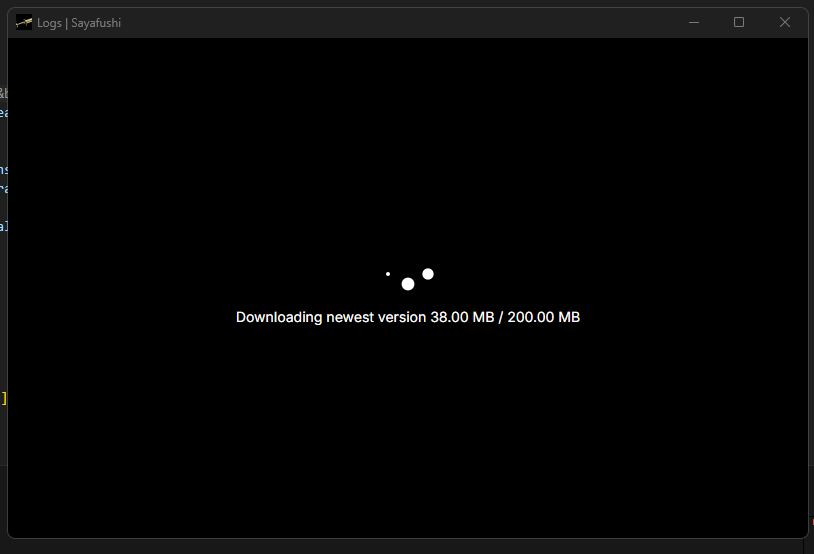

0.0.1
This is a preliminary list; I’ll continue adding items as they come to mind.
Changes
The app has been split into the following folders:
- app – Tauri backend
- web – Svelte/Vite frontend
- tools – Anything related to CI/release, either consumed by GitHub Actions or run manually
App
-
Logic refactor:
All core logic has been moved into appropriate modules, including:- Creating system tray / handling events
- Window event handling
- Handling events from the web frontend
- Database calls
- Access to the shell
- Spawning background workers and packet-sniffing/processing
-
Database migrator:
- At startup, the app applies all scripts from the
migrationsfolder - Scripts must follow the format
[1-9*]_desc.sql
- At startup, the app applies all scripts from the
-
Settings management:
- On startup, the app will always create default settings from
settings.template.jsonif no settings file is present - All previously hardcoded API URLs have been moved into the settings file
- On startup, the app will always create default settings from
-
Tauri updater wrapper (DEV):
- Provides a wrapper around the Tauri updater plugin
- Allows simulating downloads for testing for now
-
build.rs
- Applies Windows-specific manifest attributes only in production builds
-
Feature flags:
- Introduced develop and production features
- develop → allows use of fake services regardless of debug/release mode
- production → applies Windows attributes to the binary
-
Integration tests:
- Currently, there is only one integration test for the database
- Ensures that on a fresh app install, the database is set up correctly
Web
- Loading spinner:
- When the app starts, the web frontend makes a
load()call - Tauri ensures that all assets are loaded and checks for active updates
- Tailored messages are shown based on the update state
- When the app starts, the web frontend makes a
